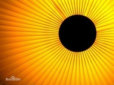

上古十大神兽之太阳烛照
太阳烛照是古中国居民的神话传说中的圣兽，其与太阴幽荧的神话是类似于伏羲女娲之类的孪生神话，是人类社会原始宗教性质的产物，同时也极有可能如部分学者所说的是母系氏族往父系氏族过渡阶段的产物，两者存在颇多的相似之处，但实际却又大相径庭，学者当带有审慎的思维展开研究。
从古籍文献中可以看出，关于太阳烛照的起源实际上有两种说法，一是太阳烛照是盘古开天辟地后混沌所化两仪中的阳与盘古一眼结合而产生的圣兽。
而第二种说法则没有盘古的参与，认为太阳烛照是直接由“一阴一阳之谓道”中的阳变化而来的大道的化身。
但到了秦汉以后，无论何种说法都逐渐销声匿迹了，如今在活态神话中已经不可再见。
据专家猜测，对太阳神烛照的崇拜是源于当时人民身处频发的自然灾害当中，而急需一个信仰得到精神上的安慰。太阳烛照代表的是天空中最耀眼的星辰，人类光明的来源――太阳，也有说太阳烛照所代表是一切属于阳的一面的事物，而其黑色外形则是对“物极必反”的体现。
在中国神话学界，有一部分学者认为：太阳烛照即山海经烛龙传说在民间的变种神话。但这一说法并没有得到广泛认同，甚至屡遭驳斥。
也有学者认为烛照的黑色球体形象是中国古代观察到了太阳黑子的佐证，并认为烛照是先民对太阳黑子的神话印象。
更多的人认为太阳烛照的源起是中国古代先民早期的太阳崇拜结合古创世神话后的自然崇拜。《道枢》：太古洪荒之世，有圣神名烛照，光遍寰宇。